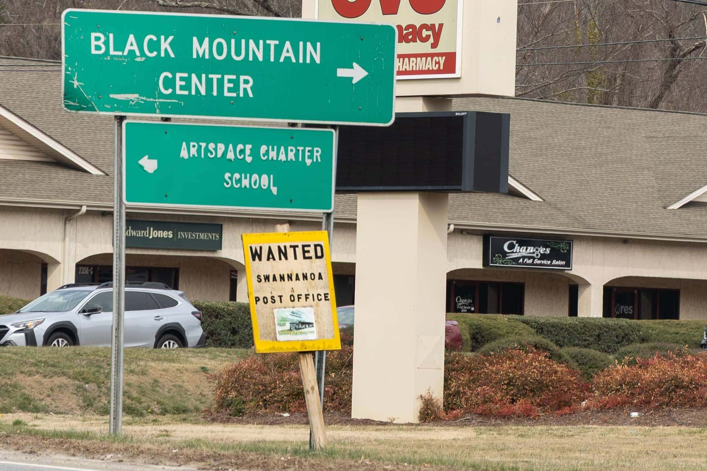
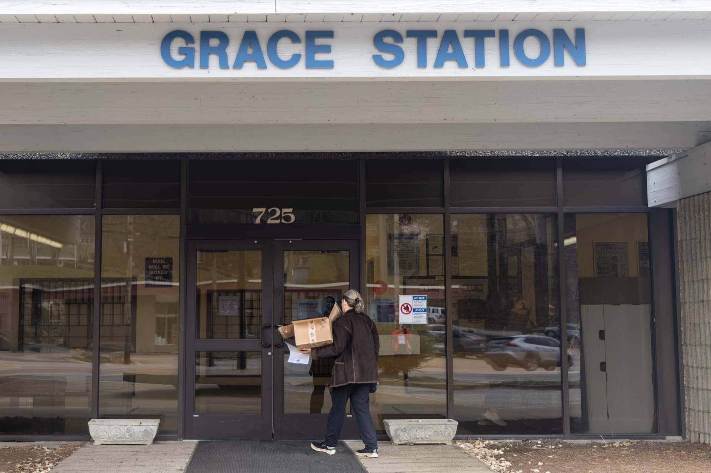
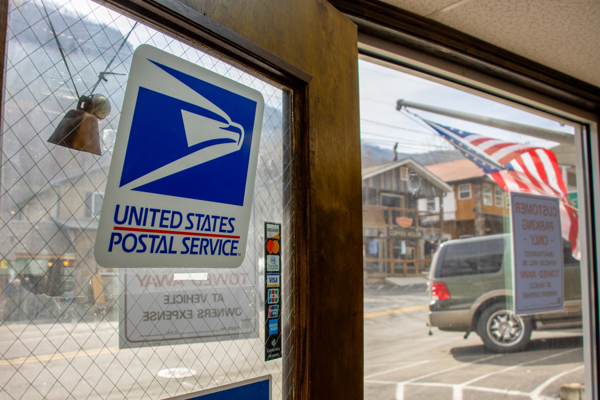
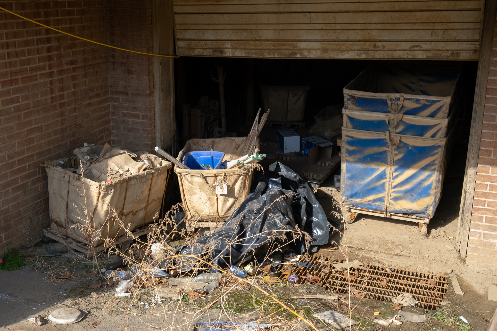
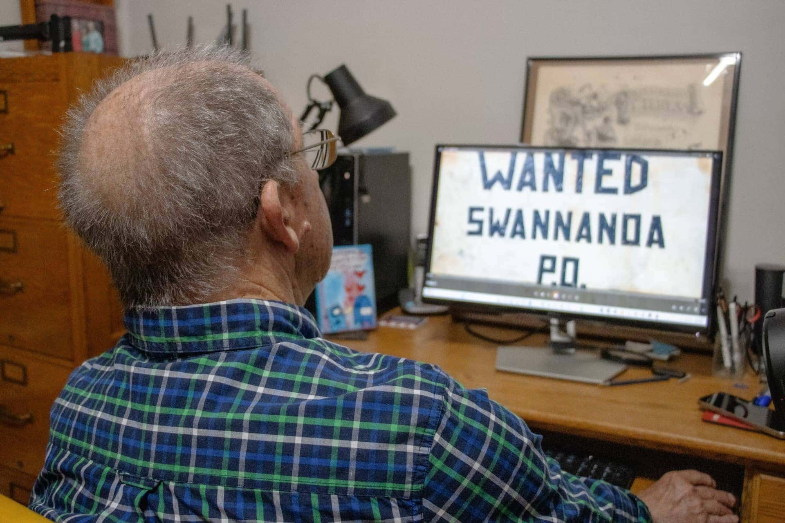
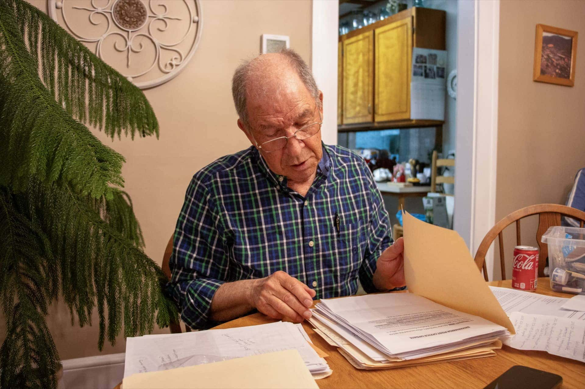
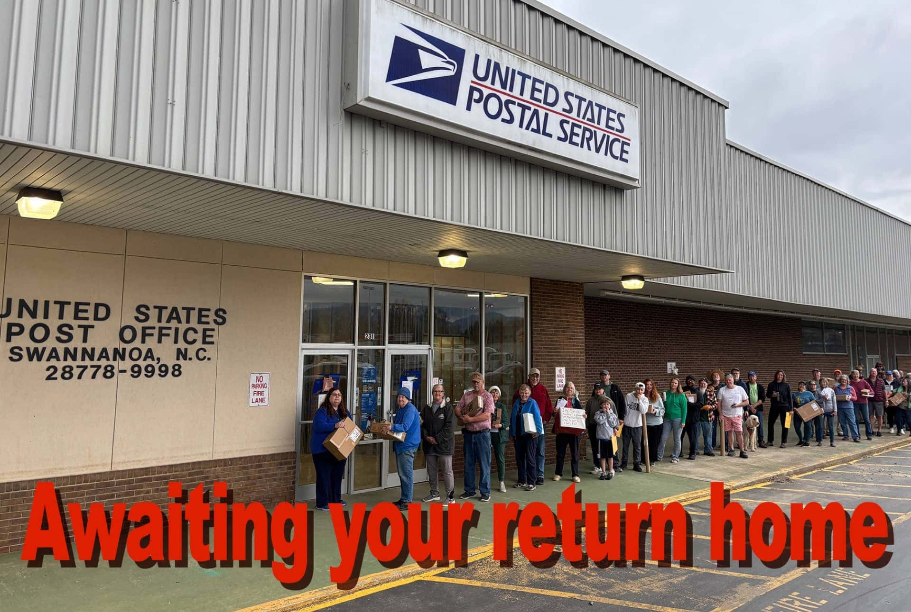

The deserted remains of Ingles Plaza sit on a stretch of U.S. Highway 70, destroyed by flooding from tropical storm Helene with only dirt and construction equipment to mark what was once home to Swannanoa's only grocery store and post office.
At an intersection nearby, a hand-painted sign reads, "Wanted Swannanoa Post Office" above a photo of community members lined up outside the shuttered building. After months of closure, the post office was recently demolished after Ingles, who leased the building, opted not to reopen the facility.
Swannanoa, a small unincorporated community of around 5,000 residents roughly 10 miles east of Asheville, North Carolina, is largely considered to be Helene's "ground zero" by Buncombe County officials. When tropical storm Helene devastated Western North Carolina in September 2024, Swannanoa endured large-scale destruction.
More than 18 months later, the community is still recovering. But while the strip mall has been cleared of debris, there is no new post office to anchor it. Instead, residents are redirected to the Grace Station Post Office in North Asheville, nearly 13 miles from the old site and a long journey's worth of hassle for residents. And they're not alone.
In fact there are six post offices still shuttered across Western North Carolina, a region that houses 11% of the state's population. Since Helene, residents in those communities have been deprived of reliable mail, furthering their sense of lingering aftermath from the storm.

Off of U.S. Highway 70 in Swannanoa, a sign reads "Wanted Swannanoa Post Office." Photo credit: Grace Sawin
Slagle is the culprit behind the "Wanted" sign and has spearheaded community efforts to bring the post office back as part of his work with the Swannanoa Grassroots Alliance. In his Swannanoa home, he has boxes filled with hundreds of papers, print-outs of correspondence with officials, reopening notices and personalized postcards.
"It's a service that has been for the U.S. population for over 250 years, before we were even a country. It's mandated that you get delivery six days a week, but it's not mandated that every little nook and cranny has to have a post office," said Slagle. "The Postal Service is one of the centers of communities. 28778, that's the zip code for all of us that live here. All of us can congregate at the post office, and it's a community service, just like the grocery store… which we don't have."
Although some federal post office buildings damaged by the storm have recently been restored and are now fully operational — Chimney Rock and Barnardsville are examples — Swannanoa is one of several communities where the post office needs to be relocated because the original site was damaged beyond repair.
According to a statement from United States Postal Service representative Philip Bogenberger, "offices in Micaville, Swannanoa and Marshall require relocation since the buildings were damaged beyond repair. In Micaville, the building was washed away. In Swannanoa and Marshall, the property owners opted not to repair the facilities. The relocation process continues for those offices, and our goal is to find alternate locations nearby for each office."
In other communities, including Plumtree, Fleetwood and Green Mountain, the post offices damaged by Helene are set to reopen. However, the constant back-and-forth has caused confusion and mail delays for customers frustrated and exhausted with the delay.
| Post Office Location | Status | Notes |
|---|---|---|
| Chimney Rock | Reopened Feb. 2026 | Full retail & P.O. box service restored |
| Barnardsville | Reopened | Fully operational |
| Swannanoa | Relocation pending | Demolished; residents sent 13 mi. to Grace Station |
| Marshall | Closed | Residents rerouted 38 mi. round-trip to Weaverville |
| Micaville | Relocation pending | Building washed away entirely |
| Plumtree | Set to reopen | Timeline unclear |
| Fleetwood | Set to reopen | Timeline unclear |
| Green Mountain | Set to reopen | Timeline unclear |
"Marshall is the county seat for Madison County. People have to drive to Buncombe County, to a different county to get their mail," said Gina Mashburn Heath, a mother of three who lives in Marshall. "And you cannot mail anything out in our area."
All Marshall residents were redirected to Weaverville, a 38-mile round-trip. "Weaverville is a small town. How nuts for the Weaverville post office to also have all, like most, a big chunk of Madison County and Barnardsville, which is in Buncombe, and Alexander, which is in Buncombe, as well as all their own mail."

A mail customer drops off her package at Grace Station, 13 miles from Swannanoa. Photo credit: Grace Sawin
A month after the flood, Swannanoa residents were redirected to a mobile unit down the road in the town of Oteen. Two months after the storm, an undated notice appeared on the door of the mobile unit informing residents that they would be relocated to Grace Station, where they have been ever since. There was "no postal person listed or contact," said Slagle.
The original Swannanoa Post Office building was a leased facility that sustained significant damage from floodwaters. But Ingles Market Inc., a regional supermarket chain that owned the property, chose not to repair it and took it off the market, forcing USPS's relocation. According to federal law, the Postal Service can only lease properties that are actively on the market.
A full 18 months after the storm, in March 2026, customers received a USPS relocation card in the mail, inviting them to send comments on a new proposed relocation, without specifying a site for the relocation. USPS clarified the 45-day comment period ended April 19, 2026. Now, Swannanoa residents await a finalized relocation site.
In the aftermath of Helene, 21 post offices in Western North Carolina were forced to close their doors after sustaining major damage. According to a statement from USPS, 15 have reopened in the 18 months since. The Chimney Rock Post Office is the latest, and is providing full retail and P.O. box services.
State officials, including North Carolina Republican Sen. Ted Budd and Republican Congressman Chuck Edwards, who represents North Carolina's 11th congressional district, have advocated for the restoration of the shuttered post offices to varying degrees. In September 2025, Congressman Edwards led an amendment that would require USPS to produce a concrete plan on reopening the closed facilities and reestablishing service.
"Hurricane Helene devastated much of our rural infrastructure, including local post offices that serve as lifelines for our communities. While significant progress has been made to rebuild across Western North Carolina, the restoration of postal facilities has lagged," Edwards said in a statement. "That's why I led an amendment requiring the U.S. Postal Service and its Office of Inspector General to provide Congress with a clear plan and timeline to reopen these facilities and fully restore service."
Earlier in the year, he raised concerns about the inoperable post offices to USPS Inspector General Tammy Hull, but was met with vague restoration plans. "Several post offices remain inoperable, forcing residents to travel up to an hour to access services," said Edwards to Hull in an April 2025 General Government Subcommittee hearing.
More recently, in March 2026, United States Postmaster General David Steiner testified before the House Committee on Oversight and Government Reform about the financial future of USPS, proposing Congress grant the Postal Service "greater legal authority to make retail network changes."

The newly reopened post office at the center of Main Street, Chimney Rock — closed for nearly 18 months after Helene. Photo credit: Ali Caudle
Main Street, the central business artery that runs through Chimney Rock, a mountain town around 25 miles southeast of Asheville, is home to the town's sole post office. Service was restored on Feb. 23, 2026, after nearly 17 months.
Peter O'Leary, Chimney Rock's mayor and the owner of Bubba O'Leary's on Main Street, recalled how residents had to open P.O. boxes in order to receive mail. "If you want your address to be Chimney Rock, you have to have a P.O. box. I couldn't just walk across the street or down the street and get my mail. I had to actually get in a vehicle and drive," said O'Leary.
Shelly McCormack's family has owned Riverwatch Bar and Grill on Main Street for 27 years. She said the absence of a post office created a headache for her parents and other business owners. "It was being sent to Lake Lure and then it would have to be forwarded back to Hendersonville," said McCormack. "It was just unclear."
Max Brown, a college student who works at Riverwatch Coffeehouse and Gift Shop, grew up in Chimney Rock but moved to Asheville two months before Helene. When the Chimney Rock post office closed, people not only experienced delays, but postal employees also lost their jobs. "A lot of the postmasters, after the storm hit, didn't think that the post office was coming back, so they had all left. I think there's only one or two there now that were here before the storm," said Brown.
McCormack said she's enthusiastic to see the post office fully functional again. "We have just made leaps and bounds in terms of progress since Helene took place. And we're just so happy to see the post office back open, to be able to use it again."

Muddied mail baskets outside the closed Marshall post office — shut since September 2024. Photo credit: Sydney Woogerd
But other communities are still in the thick of restoration, with no end in sight. Marshall is another town with no post office, along with several other municipal buildings still not in existence 18 months later. The fire department, police station, town hall and courthouse buildings were all damaged by the flood and are now abandoned, while services have relocated to temporary buildings.
"It just adds to the discombobulation of everything that all those services that were housed downtown, as they should be, are now just in some random trailer or a room of a commercial building that's unused," said Mashburn Heath. "It's like a game of hide and seek to try to find your basic municipal services."
The building that housed the Marshall post office was privately owned and leased by the U.S. government. The former owners, an elderly couple unable to afford the costs of rebuilding, sold it to a local family. According to Mashburn Heath, the family bought it with the intention of having a functioning post office downtown again.
"If the idea was to abandon the downtown, we should not have let all the small business owners put so much time and energy and money into rebuilding," said Mashburn Heath. "We brought our town back, with grassroots effort, and we're there supporting people best we can with their businesses."
Post offices have served as a vital means of communication for people for centuries. During Helene, digital communication was temporarily destroyed. Without cell service or internet access, many found themselves cut off from the rest of the world in an unprecedented blackout that in some places, lasted weeks.

Dan Slagle plays a drone video of a "Wanted Swannanoa P.O." sign constructed of local materials in his home office. During the filming of the one year anniversary of Helene documentary, he hoped the sign would grab people's attention. Photo credit: Ali Caudle
The "Wanted Swannanoa P.O." sign, constructed of local materials near Swannanoa. Video courtesy of Dan Slagle
Mashburn Heath recalled how difficult it was in the early days after losing her home, when she couldn't get things in the mail. It's hard "when you can't get those important pieces of information, bills, documents, things that people even want to send you, to give you support while all this is going on."
"We do a lot digital, but honestly, Madison County doesn't last digital. In some places. A lot of us here love Madison County for that reason. It's like, we're kind of purposefully away from it all," said Mashburn Heath. "People lost their computers, they lost their tablets. They lost their files. Mail is absolutely crucial … people needed to replace their documents and everything."

Dan Slagle looks through a folder of correspondence with officials in his Swannanoa home. Photo credit: Ali Caudle
According to the United States Postal Regulatory Commission, an independent regulatory agency, the Office of Public Affairs & Government Relations liaisons with Congress and other government agencies about high-level matters involving USPS, including service interruptions.
Slagle, who worked at the Swannanoa post office for 25 years before retiring in 2003, was a constant and familiar face for the community. "I saw a lot of people every day, and when they came through the door, it was always 'Hey, how you doing?' And I guess I remembered their P.O. Box number better than I remember their name," he reflected.

Community members lined up in front of the closed Swannanoa post office on Slagle's campaign postcard. Photo courtesy of Dan Slagle
Slagle has facilitated the mailing of over 600 postcards to local, state and federal officials asking for the restoration. On the front of the post card, over 45 community members are lined up in front of the Swannanoa building, a photo-op event Slagle organized in May 2025. As updates come in, Slagle reprints the postcards with the latest reports from local officials on the status of the Swannanoa post office.
"It's all about community, and we just can't let our post office leave us. They're part of our community. And the employees — they want to be back in Swannanoa," said Slagle.